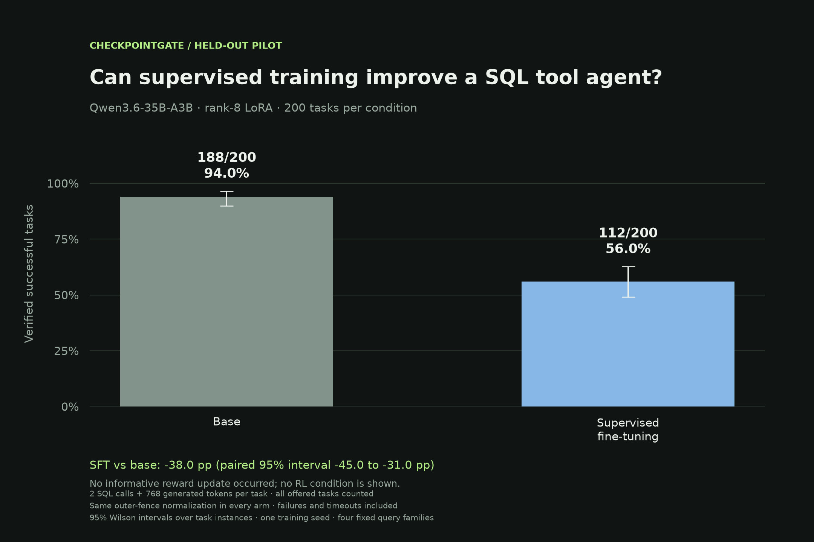

Trained in the cloud.
Verified on this Mac.
A 35B MoE model, rank-8 LoRA, and a deterministic SQL verifier. Compare frozen checkpoints on the same unfamiliar query families.
Verified completion


Download the graph ↗What changed after training?
Loading completed results…
| Condition | Clean | Tool fault |
|---|
Each task allows two SQL calls and 768 generated tokens. One whole outer Markdown fence is normalized equally in every condition. No SQL repair or test-based checkpoint selection.
Read the question. Inspect the answer.
Baseten Loops
Real serverless training and sampling. Saved optimizer state and checkpoint-pinned evaluations. See the repository for shutdown verification.
Cloudflare tested locally
Durable leases, fencing tokens, and R2 evidence storage passed local integration checks. This pilot used the local Python ledger without a cloud mirror.
A first measurement
One seed, four related synthetic test families, and an elementary regression suite. The public generator does not provide contamination resistance.